##Introduction:
work_dir <-"/stor/home/jj37257/website/content/project"
affair <- read.csv("Affairs.csv")
affair$X <- NULLThis is the ‘affairs’ dataset, which is a dataset containing information on infidelity, known as Fair’s Affairs. The data was attained using cross-section from a survey conducted by Psychology Today in 1969. It contains the following variables: number of affairs, the person’s gender and age,the number of years they were married, number of children they have,their religiousness, education level, occupation, and their rating of marriage. There are 601 observations and 9 variables in the data set.
##MANOVA Testing:
library(rstatix)
t <- affair$gender
u <- affair%>% select(affairs, yearsmarried,age,rating)
sapply(split(u, t), mshapiro_test)## female male
## statistic 0.9329811 0.9486016
## p.value 1.025729e-10 1.835357e-08lapply(split(u,t), cov) ## $female
## affairs yearsmarried age rating
## affairs 10.951228 3.530636 3.115256 -1.063816
## yearsmarried 3.530636 31.665797 39.921732 -2.003607
## age 3.115256 39.921732 74.757482 -2.521560
## rating -1.063816 -2.003607 -2.521560 1.318006
##
## $male
## affairs yearsmarried age rating
## affairs 10.840339 3.325507 2.566998 -0.968691
## yearsmarried 3.325507 30.398290 40.099491 -0.935346
## age 2.566998 40.099491 92.678337 -1.483941
## rating -0.968691 -0.935346 -1.483941 1.109852box_m(u, t)## # A tibble: 1 x 4
## statistic p.value parameter method
## <dbl> <dbl> <dbl> <chr>
## 1 24.0 0.00773 10 Box's M-test for Homogeneity of Covariance Matricesman1<-manova(cbind(affairs,yearsmarried,age,rating,education)~gender, data=affair)
summary(man1)## Df Pillai approx F num Df den Df Pr(>F)
## gender 1 0.20151 30.032 5 595 < 2.2e-16 ***
## Residuals 599
## ---
## Signif. codes: 0 '***' 0.001 '**' 0.01 '*' 0.05 '.' 0.1 ' ' 1summary.aov(man1)## Response affairs :
## Df Sum Sq Mean Sq F value Pr(>F)
## gender 1 0.9 0.8993 0.0825 0.774
## Residuals 599 6528.2 10.8985
##
## Response yearsmarried :
## Df Sum Sq Mean Sq F value Pr(>F)
## gender 1 17.1 17.078 0.5498 0.4587
## Residuals 599 18606.6 31.063
##
## Response age :
## Df Sum Sq Mean Sq F value Pr(>F)
## gender 1 1881 1881.48 22.591 2.512e-06 ***
## Residuals 599 49887 83.28
## ---
## Signif. codes: 0 '***' 0.001 '**' 0.01 '*' 0.05 '.' 0.1 ' ' 1
##
## Response rating :
## Df Sum Sq Mean Sq F value Pr(>F)
## gender 1 0.04 0.04133 0.0339 0.854
## Residuals 599 730.16 1.21897
##
## Response education :
## Df Sum Sq Mean Sq F value Pr(>F)
## gender 1 547.25 547.25 112.41 < 2.2e-16 ***
## Residuals 599 2916.12 4.87
## ---
## Signif. codes: 0 '***' 0.001 '**' 0.01 '*' 0.05 '.' 0.1 ' ' 1affair %>% group_by(gender) %>% summarize(mean(age), mean(education))## # A tibble: 2 x 3
## gender `mean(age)` `mean(education)`
## <fct> <dbl> <dbl>
## 1 female 30.8 15.3
## 2 male 34.3 17.2pairwise.t.test(affair$age,affair$gender, p.adj="none")##
## Pairwise comparisons using t tests with pooled SD
##
## data: affair$age and affair$gender
##
## female
## male 2.5e-06
##
## P value adjustment method: nonepairwise.t.test(affair$education,affair$gender, p.adj="none")##
## Pairwise comparisons using t tests with pooled SD
##
## data: affair$education and affair$gender
##
## female
## male <2e-16
##
## P value adjustment method: none1 - (0.95^4)## [1] 0.18549380.05/10## [1] 0.005Interpretation: A one-way MANOVA was conducted to determine the effect of gender (male or female) on five dependent variables (affairs,years married,age,rating, and education) Examination of formal test of multivariate normality assumption for each group showed normality for each group.Examination of covariance matrices for each group revealed relative homogeneity. No univariate or multivariate outliers were evident and MANOVA was considered to be an appropriate analysis technique.
Significant differences were found among gender for at least one of the dependent variables, Pillai trace= 0.20151, pseudoF= 30.032, p <0.0001.
Univariate ANOVAs for each dependent variable were conducted as follow-up tests to the MANOVA, using the Bonferroni method for controlling Type I error rates for multiple comparisons. The univariate ANOVAs for age and education were also significant with p < 0.0001.
Post hoc analysis was performed conducting pairwise comparisons to determine which gender differed in age and education. Both genders were found to differ significantly from each other in terms of age and education after adjusting for multiple comparisons(bonferroni ).
I performed 1 MANOVA, 5 ANOVAs, and 4 t tests, so α = 0.05/10 as significance level. The probability of at least one type I error, unadjusted, is 0.1854938. The Bonferroni corrected significance level is 0.005.
##Randomization:
gen<-affair %>% select(gender,rating)
head(gen)## gender rating
## 1 male 4
## 2 female 4
## 3 female 4
## 4 male 5
## 5 male 3
## 6 female 5ggplot(gen,aes(rating,fill=gender))+geom_histogram(bins=6.5)+facet_wrap(~gender,ncol=2)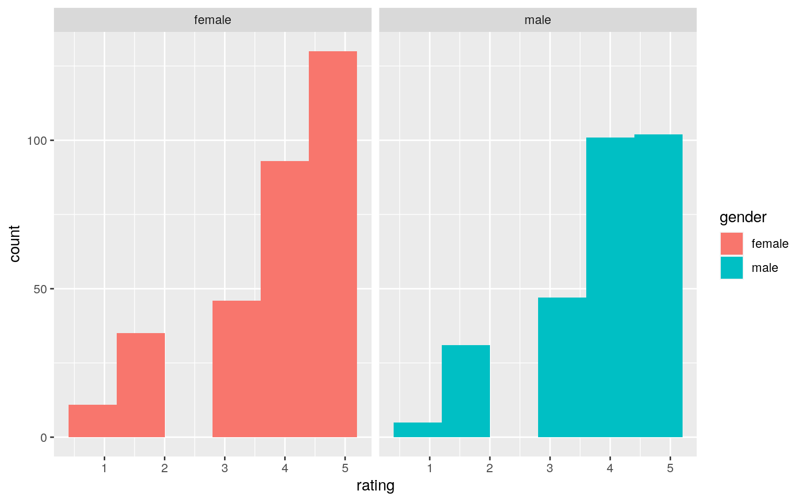
gen %>% group_by(gender) %>% summarize(means=mean(rating)) %>% summarize(mean_diff=diff(means)) %>% glimpse()## Rows: 1
## Columns: 1
## $ mean_diff <dbl> -0.01660562rand_dist<-vector()
for(i in 1:5000){
new<-data.frame(rating=sample(gen$rating),gen=gen$gender)
rand_dist[i]<-mean(new[new$gen=="male",]$rating)
mean(new[new$condition=="female",]$rating)}
{hist(rand_dist,main="",ylab="") ; abline(v = c(-0.01660562, 0.01660562),col="red")}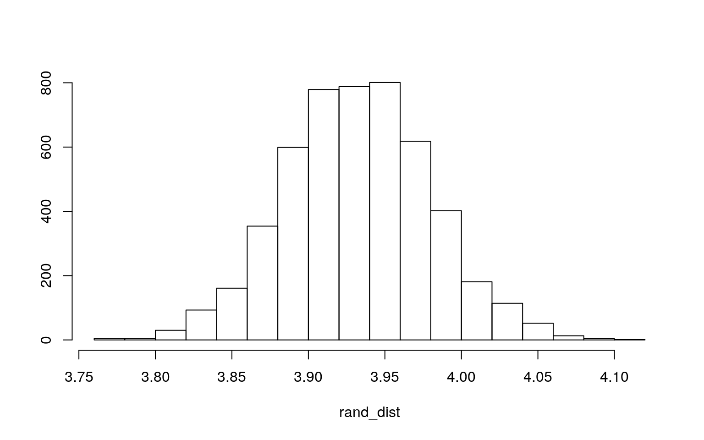
mean(rand_dist>0.01660562 | rand_dist < -0.01660562)## [1] 1mean(rand_dist>-0.01660562)*2## [1] 2t.test(data=affair, rating~gender,)##
## Welch Two Sample t-test
##
## data: rating by gender
## t = 0.18491, df = 598.93, p-value = 0.8534
## alternative hypothesis: true difference in means is not equal to 0
## 95 percent confidence interval:
## -0.1597633 0.1929745
## sample estimates:
## mean in group female mean in group male
## 3.939683 3.923077Interpretation: Null Hypothesis: Mean rating of marriage is the same for both genders. Alternative Hypothesis: Mean rating of marriage is not the same for male and females. Based on this test, we fail to reject the null hypothesis (p>0.05) that the group means are all equal. There is a probability of 0.8534 to get a mean difference if the outcome data was split into every possible random grouping.
##Linear Regression Model:
affair$age_r<-affair$age-mean(affair$age)
affair$yearsmarried_r<-affair$yearsmarried-mean(affair$yearsmarried)
fit<-lm(affairs~age_r+yearsmarried_r, data= affair)
summary(fit)##
## Call:
## lm(formula = affairs ~ age_r + yearsmarried_r, data = affair)
##
## Residuals:
## Min 1Q Median 3Q Max
## -2.6300 -1.7312 -0.9970 -0.3918 11.6199
##
## Coefficients:
## Estimate Std. Error t value Pr(>|t|)
## (Intercept) 1.45591 0.13198 11.032 < 2e-16 ***
## age_r -0.04494 0.02261 -1.987 0.0473 *
## yearsmarried_r 0.16889 0.03770 4.480 8.96e-06 ***
## ---
## Signif. codes: 0 '***' 0.001 '**' 0.01 '*' 0.05 '.' 0.1 ' ' 1
##
## Residual standard error: 3.235 on 598 degrees of freedom
## Multiple R-squared: 0.04124, Adjusted R-squared: 0.03804
## F-statistic: 12.86 on 2 and 598 DF, p-value: 3.396e-06ggplot(affair,aes(y=age_r,x=yearsmarried_r,color=affairs))+geom_point()+stat_smooth(method="lm",se=FALSE)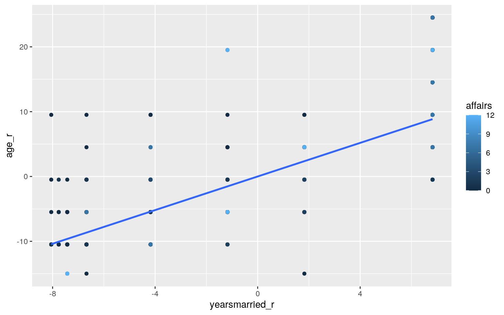
fit2<-lm(affairs~age_r, data = affair)
summary(fit2)##
## Call:
## lm(formula = affairs ~ age_r, data = affair)
##
## Residuals:
## Min 1Q Median 3Q Max
## -2.285 -1.609 -1.270 -0.949 11.051
##
## Coefficients:
## Estimate Std. Error t value Pr(>|t|)
## (Intercept) 1.45591 0.13406 10.860 <2e-16 ***
## age_r 0.03382 0.01444 2.342 0.0195 *
## ---
## Signif. codes: 0 '***' 0.001 '**' 0.01 '*' 0.05 '.' 0.1 ' ' 1
##
## Residual standard error: 3.287 on 599 degrees of freedom
## Multiple R-squared: 0.00907, Adjusted R-squared: 0.007416
## F-statistic: 5.483 on 1 and 599 DF, p-value: 0.01953ggplot(affair,aes(y=affairs,x=age_r))+geom_point()+stat_smooth(method="lm",se=FALSE)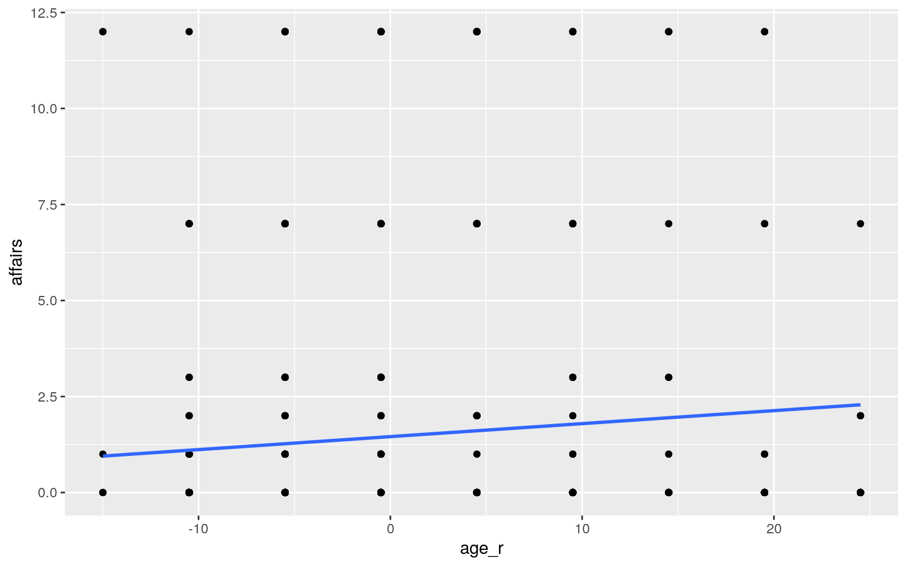
fit3<-lm(affairs~yearsmarried_r, data = affair)
summary(fit3)##
## Call:
## lm(formula = affairs ~ yearsmarried_r, data = affair)
##
## Residuals:
## Min 1Q Median 3Q Max
## -2.2106 -1.6575 -0.9937 -0.5974 11.3658
##
## Coefficients:
## Estimate Std. Error t value Pr(>|t|)
## (Intercept) 1.45591 0.13230 11.005 <2e-16 ***
## yearsmarried_r 0.11063 0.02377 4.655 4e-06 ***
## ---
## Signif. codes: 0 '***' 0.001 '**' 0.01 '*' 0.05 '.' 0.1 ' ' 1
##
## Residual standard error: 3.243 on 599 degrees of freedom
## Multiple R-squared: 0.03491, Adjusted R-squared: 0.0333
## F-statistic: 21.67 on 1 and 599 DF, p-value: 3.996e-06ggplot(affair,aes(y=affairs,x=yearsmarried_r))+geom_point()+stat_smooth(method="lm",se=FALSE)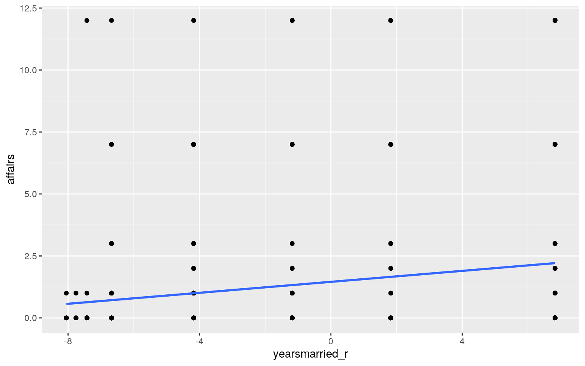
fit4<-lm(affairs ~ age_r * yearsmarried_r, data=affair)
summary(fit4)##
## Call:
## lm(formula = affairs ~ age_r * yearsmarried_r, data = affair)
##
## Residuals:
## Min 1Q Median 3Q Max
## -2.7168 -1.7603 -1.0524 -0.4163 11.5991
##
## Coefficients:
## Estimate Std. Error t value Pr(>|t|)
## (Intercept) 1.646381 0.192141 8.569 < 2e-16 ***
## age_r -0.027753 0.025878 -1.072 0.283942
## yearsmarried_r 0.152612 0.039523 3.861 0.000125 ***
## age_r:yearsmarried_r -0.004742 0.003478 -1.363 0.173359
## ---
## Signif. codes: 0 '***' 0.001 '**' 0.01 '*' 0.05 '.' 0.1 ' ' 1
##
## Residual standard error: 3.233 on 597 degrees of freedom
## Multiple R-squared: 0.04422, Adjusted R-squared: 0.03941
## F-statistic: 9.206 on 3 and 597 DF, p-value: 5.826e-06#Linearity
resids<-fit$residuals
fitvals<-fit$fitted.values
ggplot()+geom_point(aes(fitvals,resids))+geom_hline(yintercept=0, color='red')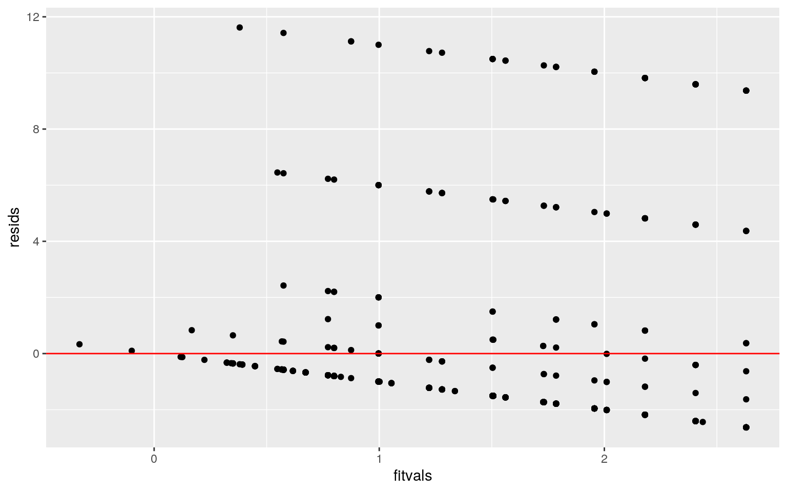
fitted<-lm(affairs~age_r+yearsmarried_r, data= affair)$fitted.values
ggplot()+geom_point(aes(fitted,resids))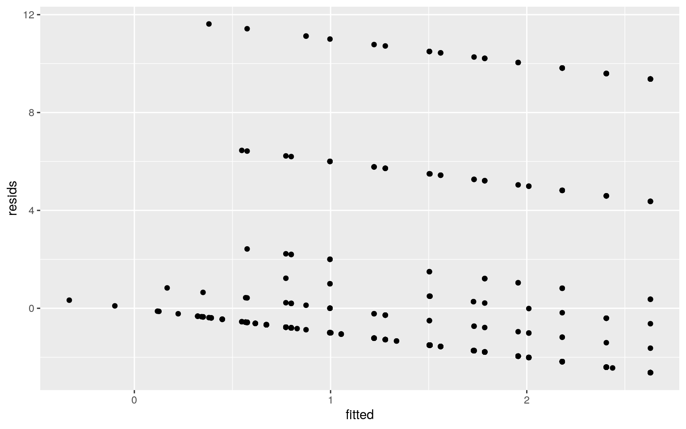
#Normality
qqnorm(affair$age_r)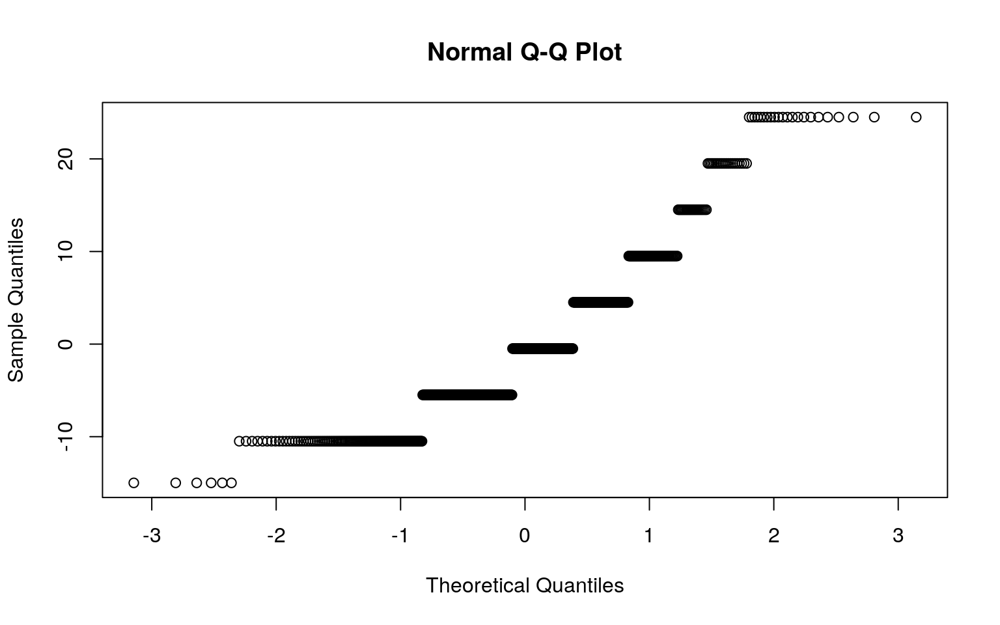
shapiro.test(head(affair$age_r))##
## Shapiro-Wilk normality test
##
## data: head(affair$age_r)
## W = 0.86868, p-value = 0.221qqnorm(affair$yearsmarried_r)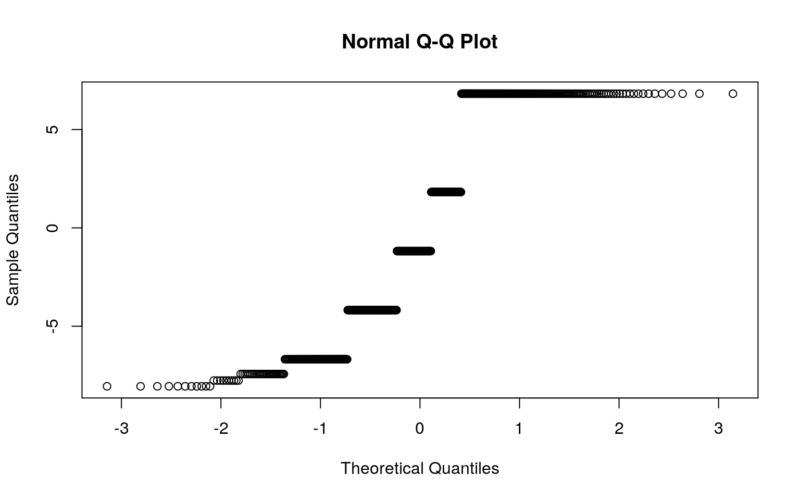
shapiro.test(head(affair$yearsmarried_r))##
## Shapiro-Wilk normality test
##
## data: head(affair$yearsmarried_r)
## W = 0.85609, p-value = 0.1762resids<-lm(affairs~age_r+yearsmarried_r, data= affair)$residuals
ggplot()+geom_histogram(aes(resids),bins=10)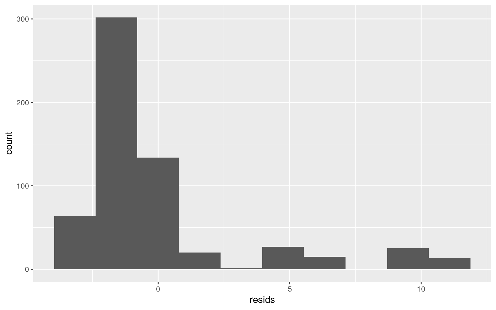
ks.test(resids, "pnorm", mean=0, sd(resids))##
## One-sample Kolmogorov-Smirnov test
##
## data: resids
## D = 0.31311, p-value < 2.2e-16
## alternative hypothesis: two-sidedshapiro.test(resids)##
## Shapiro-Wilk normality test
##
## data: resids
## W = 0.65307, p-value < 2.2e-16#Homoskedasticity
bptest(fit)##
## studentized Breusch-Pagan test
##
## data: fit
## BP = 23.026, df = 2, p-value = 9.998e-06ggplot(affair,aes(age_r,yearsmarried_r,color=affairs))+geom_point()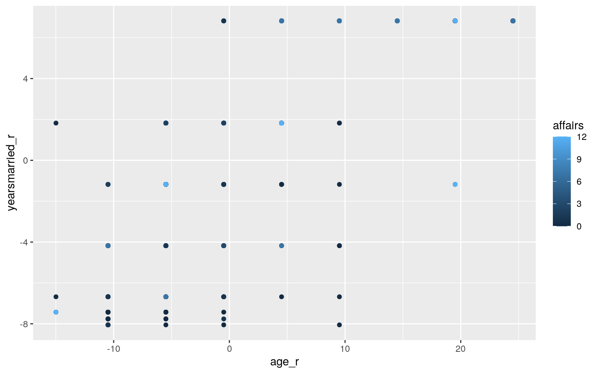
library(sandwich)
library(lmtest)
fi<-lm(affairs~age_r+yearsmarried_r, data = affair)
bptest(fit)##
## studentized Breusch-Pagan test
##
## data: fit
## BP = 23.026, df = 2, p-value = 9.998e-06coeftest(fit)##
## t test of coefficients:
##
## Estimate Std. Error t value Pr(>|t|)
## (Intercept) 1.455907 0.131975 11.0317 < 2.2e-16 ***
## age_r -0.044942 0.022613 -1.9874 0.04733 *
## yearsmarried_r 0.168890 0.037702 4.4796 8.962e-06 ***
## ---
## Signif. codes: 0 '***' 0.001 '**' 0.01 '*' 0.05 '.' 0.1 ' ' 1coeftest(fit, vcov = vcovHC(fit))##
## t test of coefficients:
##
## Estimate Std. Error t value Pr(>|t|)
## (Intercept) 1.455907 0.132322 11.0027 < 2.2e-16 ***
## age_r -0.044942 0.023802 -1.8882 0.05949 .
## yearsmarried_r 0.168890 0.040637 4.1560 3.711e-05 ***
## ---
## Signif. codes: 0 '***' 0.001 '**' 0.01 '*' 0.05 '.' 0.1 ' ' 1Interpretation:
Predicted affairs for an average age with average years married is 1.646381. Controlling for years married, for every 1-unit increase in age, affairs goes down 0.027753 on average. Controlling for age, in persons of average years married, affairs are 0.152612 higher. Controlling for age, the slope for years married on affairs is 0.004742 less.
4.124% is the multiple r squared value and it is the proportion of variation in the outcome that is explained by my model. The adjusted r squared value says 3.804% of variability of affairs is explained (penalty to mitigate chance association).
Variance does not look pretty constant. In both formal tests of normality, we reject the null hypothesis that the true distribution is normal. Based on the Breusch-Pagan test, the p-Value < 0.05 indicates that the null hypothesis can not be rejected and therefore heteroskedasticity does not exists. With the robust standard errors, the t values decreased and the p-values increased.
##Bootstrapped Standard errors:
boot_sd<-affair[sample(nrow(affair),replace=TRUE),]
samp_distn<-replicate(1000, {
boot_sd<-affair[sample(nrow(affair),replace=TRUE),]
fit5<-lm(affairs ~ age_r * yearsmarried_r,data=boot_sd)
coef(fit5)
})
samp_distn%>%t%>%as.data.frame%>%summarize_all(sd)## (Intercept) age_r yearsmarried_r age_r:yearsmarried_r
## 1 0.2048709 0.02864411 0.04427715 0.003453116summary(fit4)##
## Call:
## lm(formula = affairs ~ age_r * yearsmarried_r, data = affair)
##
## Residuals:
## Min 1Q Median 3Q Max
## -2.7168 -1.7603 -1.0524 -0.4163 11.5991
##
## Coefficients:
## Estimate Std. Error t value Pr(>|t|)
## (Intercept) 1.646381 0.192141 8.569 < 2e-16 ***
## age_r -0.027753 0.025878 -1.072 0.283942
## yearsmarried_r 0.152612 0.039523 3.861 0.000125 ***
## age_r:yearsmarried_r -0.004742 0.003478 -1.363 0.173359
## ---
## Signif. codes: 0 '***' 0.001 '**' 0.01 '*' 0.05 '.' 0.1 ' ' 1
##
## Residual standard error: 3.233 on 597 degrees of freedom
## Multiple R-squared: 0.04422, Adjusted R-squared: 0.03941
## F-statistic: 9.206 on 3 and 597 DF, p-value: 5.826e-06coeftest(fit4, vcov = vcovHC(fit4))##
## t test of coefficients:
##
## Estimate Std. Error t value Pr(>|t|)
## (Intercept) 1.6463809 0.2045691 8.0480 4.561e-15 ***
## age_r -0.0277530 0.0285760 -0.9712 0.3318418
## yearsmarried_r 0.1526119 0.0433119 3.5236 0.0004584 ***
## age_r:yearsmarried_r -0.0047415 0.0035804 -1.3243 0.1859133
## ---
## Signif. codes: 0 '***' 0.001 '**' 0.01 '*' 0.05 '.' 0.1 ' ' 1Interpretation: The p-values for the corrected SEs are higher than the p-values of the uncorrected ones. Additionally the Std. Errors for the corrected SEs are also higher than the uncorrected ones.
##Logistic Regression Model:
affair$y<-ifelse(affair$gender=="male",1,0)
fit5<-glm(y~age+children+occupation, data = affair, family=binomial(link="logit"))
summary(fit5)##
## Call:
## glm(formula = y ~ age + children + occupation, family = binomial(link = "logit"),
## data = affair)
##
## Deviance Residuals:
## Min 1Q Median 3Q Max
## -2.0841 -1.1054 -0.3685 0.9398 2.1370
##
## Coefficients:
## Estimate Std. Error z value Pr(>|z|)
## (Intercept) -3.90533 0.44167 -8.842 <2e-16 ***
## age 0.02226 0.01146 1.942 0.0521 .
## childrenyes 0.36836 0.22667 1.625 0.1041
## occupation 0.64875 0.06542 9.917 <2e-16 ***
## ---
## Signif. codes: 0 '***' 0.001 '**' 0.01 '*' 0.05 '.' 0.1 ' ' 1
##
## (Dispersion parameter for binomial family taken to be 1)
##
## Null deviance: 831.76 on 600 degrees of freedom
## Residual deviance: 672.34 on 597 degrees of freedom
## AIC: 680.34
##
## Number of Fisher Scoring iterations: 4exp(coef(fit5))## (Intercept) age childrenyes occupation
## 0.02013422 1.02251280 1.44536804 1.91314551prob <- predict(fit5, data = affair, type = "response")
pred<-ifelse(prob>.5,1,0)
table(prediction=pred, truth = affair$y) %>% addmargins()## truth
## prediction 0 1 Sum
## 0 213 83 296
## 1 102 203 305
## Sum 315 286 601#Accuracy
(213+203)/601## [1] 0.6921797#TPR
203/286## [1] 0.7097902#TNR
213/315## [1] 0.6761905#PPV
203/305## [1] 0.6655738library(plotROC)
ROCplot<-ggplot(affair)+geom_roc(aes(d=y,m=prob), n.cuts=0)+ geom_segment(aes(x=0,xend=1,y=0,yend=1),lty=2)
ROCplot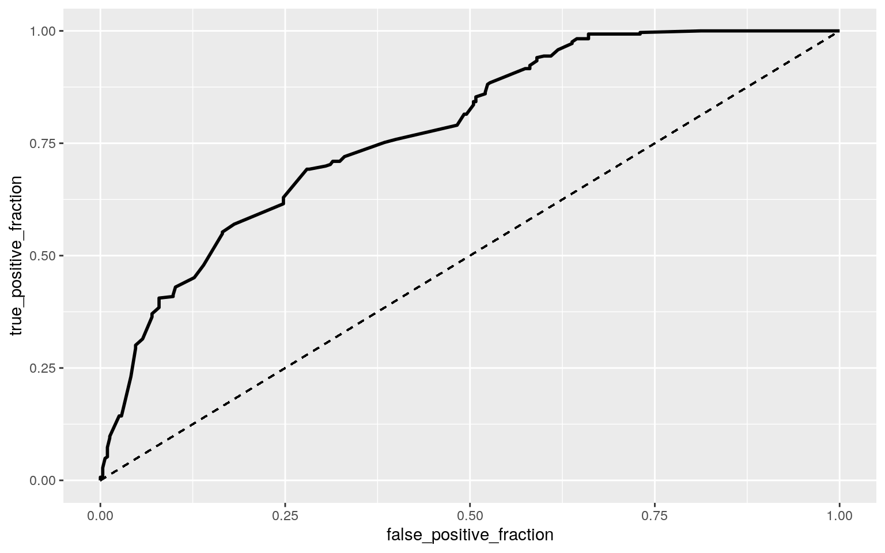
calc_auc(ROCplot)## PANEL group AUC
## 1 1 -1 0.7783716class_diag<-function(probs,truth){
tab<-table(factor(probs>.5,levels=c("FALSE","TRUE")),truth)
acc=sum(diag(tab))/sum(tab)
sens=tab[2,2]/colSums(tab)[2]
spec=tab[1,1]/colSums(tab)[1]
ppv=tab[2,2]/rowSums(tab)[2]
if(is.numeric(truth)==FALSE & is.logical(truth)==FALSE) truth<-as.numeric(truth)-1
ord<-order(probs, decreasing=TRUE)
probs <- probs[ord]; truth <- truth[ord]
TPR=cumsum(truth)/max(1,sum(truth))
FPR=cumsum(!truth)/max(1,sum(!truth))
dup<-c(probs[-1]>=probs[-length(probs)], FALSE)
TPR<-c(0,TPR[!dup],1); FPR<-c(0,FPR[!dup],1)
n <- length(TPR)
auc<- sum( ((TPR[-1]+TPR[-n])/2) * (FPR[-1]-FPR[-n]) )
data.frame(acc,sens,spec,ppv,auc)
}
k=10
data<-affair[sample(nrow(affair)),]
folds<-cut(seq(1:nrow(affair)),breaks=k,labels=F)
diags<-NULL
for(i in 1:k){
train<-data[folds!=i,]
test<-data[folds==i,]
truth<-test$y
fit6<-glm(y~age+children+occupation, data = affair, family = "binomial")
probs<-predict(fit6,newdata = test,type="response")
diags<-rbind(diags,class_diag(probs,truth))
}
summarize_all(diags,mean)## acc sens spec ppv auc
## 1 0.6922678 0.7083585 0.6789069 0.6646047 0.7797899affair$logit<-predict(fit5,type="link")
affair%>%ggplot()+geom_density(aes(logit,color=gender,fill=gender), alpha=.4)+
theme(legend.position=c(.85,.85))+geom_vline(xintercept=0)+xlab("logit (log-odds)")+
geom_rug(aes(logit,color=gender))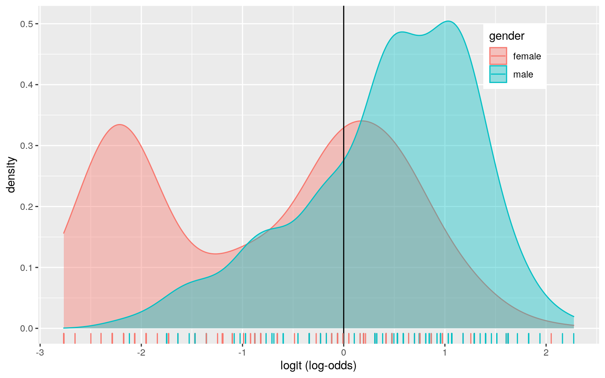 Interpretation: Controlling for children and occupation, going up 1 age multiplies odds by a factor of 1.023. Controlling for age and occupation, going up 1 children multiplies odds by a factor of 1.445.Controlling for age and children, going up 1 occupation multiplies odds by a factor of 1.913.
Overall Accuracy (0.692) is just proportion of correctly classified cases.Sensitivity is the true positive rate (0.710) and it is the probability of correctly detecting a male based on age, children, and occupation.Specificity is the true negative rate (0.676) and it is the probability of correctly detecting a female based on age, children, and occupation. Precision ( 0.666) is the proportion classified as male actually being a male. The auc quantifies how well we are predicting overall and it is 0.614, which is poor since the rule of thumb for AUC is 0.6-0.7 is poor. It is hard to predict gender from just age, children, and occupation.
The ROC curve lets us visualize trade-off between sensitivity and specificity. After the fold classification diagnostics, the acc is 0.692, the sens is 0.710, the spec is 0.676, and the ppv is 0.665. The AUC actually increased a bit to 0.772 making it fair.
##Logistic Regression from all variables:
fit9<-glm(y~age+religiousness+occupation+rating, data = affair, family = binomial)
prob<-predict(fit9,type="response")
class_diag(prob,affair$y)## acc sens spec ppv auc
## 1 0.6838602 0.7447552 0.6285714 0.6454545 0.7763792k=10
data<-affair[sample(nrow(affair)),]
folds<-cut(seq(1:nrow(affair)),breaks=k,labels=F)
diags<-NULL
for(i in 1:k){
train<-data[folds!=i,]
test<-data[folds==i,]
truth<-test$y
fit<-glm(y~age+religiousness+occupation+rating,data=train,family="binomial")
probs<-predict(fit,newdata = test,type="response")
diags<-rbind(diags,class_diag(probs,truth))
}
summarize_all(diags,mean)## acc sens spec ppv auc
## 1 0.6756557 0.7608996 0.608482 0.6423305 0.7759758x<-model.matrix(fit9)
y<-as.matrix(affair$y)
cv<-cv.glmnet(x,y,family = 'binomial')
lasso1<-glmnet(x,y,family = 'binomial',lambda=cv$lambda.1se)
coef(lasso1)## 6 x 1 sparse Matrix of class "dgCMatrix"
## s0
## (Intercept) -2.34193547
## (Intercept) .
## age 0.00774235
## religiousness .
## occupation 0.46353149
## rating .k=10
data<-affair[sample(nrow(affair)),]
folds<-cut(seq(1:nrow(affair)),breaks=k,labels=F)
diags<-NULL
for(i in 1:k){
train<-data[folds!=i,]
test<-data[folds==i,]
truth<-test$y
fit<-glm(y~age+occupation,data=train,family="binomial")
probs<-predict(fit,newdata = test,type="response")
diags<-rbind(diags,class_diag(probs,truth))
}
summarize_all(diags,mean)## acc sens spec ppv auc
## 1 0.6822404 0.7527101 0.6187136 0.6429579 0.783386Interpretation: Overall Accuracy (0.684) is just proportion of correctly classified cases.Sensitivity is the true positive rate (0.745) and it is the probability of correctly detecting a male based on age, religiousness, occupation and rating.Specificity is the true negative rate (0.629) and it is the probability of correctly detecting a female based on age, religiousness, occupation and rating. Precision ( 0.645) is the proportion classified as male actually being a male. The auc quantifies how well we are predicting overall and it is 0.776, which is fair since the rule of thumb for AUC is 0.7-0.8 is fair It is somewhat hard to predict gender from just age, religiousness, occupation and rating.
After the fold classification diagnostics, the acc is 0.674, the sens is 0.755, the spec is 0.602, the ppv is 0.636 and the auc is 0.768. All of the diagnostics actually decreased when compared with the in-sample metrics. The model is not the best at predicting gender on new data. The drop in AUC from the original indicates slight overfitting!
The variables that were retained were age and occupation because they were the only variables that had a non zero value. These variables are most predictive of gender!
After the fold classification diagnostics on the lasso selected varibales, the acc is 0.671, the sens is 0.751, the spec is 0.600, the ppv is 0.637 and the auc is 0.776. Only the ppv and the auc increased when compared to the logistic regressions above whereas the other diagnostics decreased. Same story: the model is not the best at predicting gender on new data. The model makes better predictions on the new dataset (better CV AUC!).